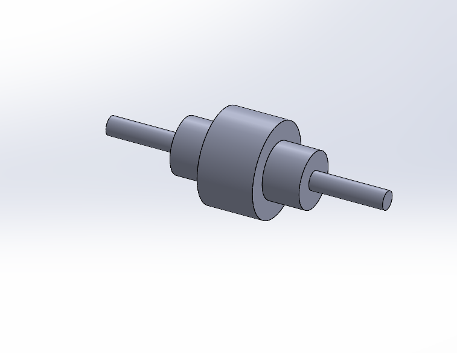
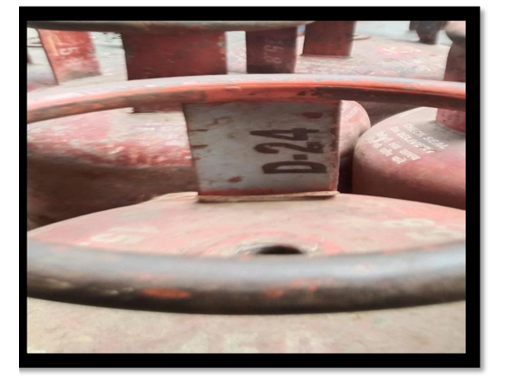

Automatic Trash Can Lid Shutter
Problem: Normal trash cans require you to touch them or press a foot pedal, which can spread germs in public spaces. Also, standard lid hinges break easily over time.
My Solution: Designed an automatic circular lid (like a camera shutter) in SOLIDWORKS. It opens and closes smoothly, which reduces stress on the motor and makes the system last much longer.
Prototyping (3D Printing): Set the spacing between parts to 0.3mm so it can be 3D printed easily without the blades sticking or rubbing against each other.
Orthopaedic Tibia Bone Model
Objective: Create a hand-held 3D model of a leg bone (tibia) to help medical students study different types of bone fractures.
How It Was Done: Imported a 3D scan of a human bone into Fusion 360 and sliced the bone digitally along standard medical fracture lines (diagonal, spiral, and straight cuts).
3D Printing: 3D printed the sliced bone parts. The final parts snap together like puzzle pieces, allowing students to touch and feel how broken bones align and fit back together.
Electric Scooter Prototype
Designed this electric scooter under **TCG Design Studio** during an automobile design internship. The project focused on fitting all components neatly inside a compact layout.
Designed the metal frame to hold the battery pack under the floorboard. This keeps the weight low (low center of gravity) so the scooter is stable. Also adjusted the steering angle to ensure safe and easy steering.
Designed the rear swingarm section to house a hub motor inside the wheel. Positioned the dual shocks so they have enough room to move up and down without hitting the mudguard.

Concentric Stepped Shaft
Exercise Objective: Modeled a standard rotating machine shaft in SOLIDWORKS to practice reading blueprints and converting 2D drawings into 3D CAD models.
How It Was Done: Studied the dimensions from a 2D PDF drawing (total length of 300mm and different section diameters) and designed the 3D model step-by-step to match the exact size.
Why It Matters: In real machines, shafts have different "steps" or sections to hold bearings and gears in place safely. Designing them correctly ensures the parts fit together perfectly on the assembly floor.
27. Pipe Support Cradle
Practice Overview: Modeled a pillow block style pipe support cradle/saddle in SOLIDWORKS, utilizing projection layouts and reinforcing structural features in metric coordinates.
Modeling Technique: Extruded the rectangular base flange (75 mm x 52 mm x 9 mm thickness). Constructed the main U-shaped cylindrical cradle (inner radius R20, length 40 mm, wall thickness 8 mm) positioned at a height of 40 mm. Extruded the central support neck (10 mm width) and added two angled side reinforcing ribs (8 mm thickness) for load stability.
28. Multi-Step Tapered Sleeve
Exercise Objective: Modeled a complex stepped sleeve with multiple descending external steps and a hollow inside bore in SOLIDWORKS.
How It Was Done: Designed the left portion hollow with an internal hole of 40mm diameter. Formed the right side with 7 descending external steps (diameters ranging from 80mm down to 5mm) to match the total span of 180mm.
Why It Matters: Stepped sleeves are used to join shafts of different sizes or protect internal joints. Precise sizing ensures it fits standard couplings without slipping.
29. Slotted Guide Block
Practice Overview: Modeled a high-tolerance slotted guide bracket in SOLIDWORKS using imperial coordinates, integrating features such as a 60° dovetail channel pocket, a double-stage cylindrical guide pin, and slot cuts.
Modeling Technique: Extruded the main rectangular bracket block (6.00" x 3.62" x 2.00"). Sketched a 60° profile cutout on the rear face and extruded a channel cut (depth 1.00", width 4.000") to produce the alignment dovetail. Extruded the concentric cylindrical bosses (Ø2.75" base and Ø1.50" neck extension) from the front face. Placed a pocket cut through the neck tip to create a 0.375" wide slot.
30. Ex. 2: Bearing Cradle Block
Practice Overview: Modeled a complex bearing cradle block based on detailed 2D isometric blueprint specifications, featuring a central R20 cylindrical groove, multiple stepped shoulders, and bottom channel cutouts.
Modeling Technique: Utilized precise 3D modeling workflows in SOLIDWORKS. Extruded the primary block dimensions (90x64x33 mm), followed by the top supports and central R20 cutout. Applied geometric constraints for the 34x14 mm bottom slot and 28x9 mm side channels to ensure total alignment.
3. F450 Quadcopter Frame
Exercise Objective: Built a complete F450 quadcopter drone frame assembly in SOLIDWORKS by following professional video tutorials to practice multi-part fits.
How It Was Done: Individually modeled all parts: the central chassis boards, the structural arm trusses, motor seats, brushless DC motors, and propeller blades. Combined them together using assembly mates to make sure all holes and screws align.
Why It Matters: Learning how parts fit together (assemblies) is essential for shop floors. It teaches you how to manage clearance spacings, bolts, and interlocking structures so everything fits in real life.

Cylinder Stay Plate Requalification Marking
Process Breakdown: Visual inspection of stay plate markings (e.g., A/24, B/24, C/24, D/24) in the Cold Repair Shed to segregate cylinders due for 5/10 year statutory testing.
Key Engineering Fix: Streamlined stay plate recording logbooks into a digital tracking list for faster degassing shed handoff.
Impact & Results: 100% compliance with PESO statutory testing schedule.
1. 4-Cylinder Inline Engine & Crankshaft
Assembly Overview: Modeled a complete 4-cylinder inline engine assembly in SOLIDWORKS, featuring a 180° offset multi-throw crankshaft, split connecting rods, gudgeon wrist pins, and 4-stroke pistons.
Kinematic Motion Study: Applied rotational motor mates and concentric slider constraints to simulate realistic piston reciprocation and crankshaft rotation without part interference.
Engineering Application: Mastered complex part mates, clearance verification, and dynamic balance calculations for internal combustion engine mechanisms.
2. Mars Rover Rocker-Bogie Mechanism
Mechanism Overview: Modeled a NASA-style 6-wheel Rocker-Bogie passive suspension mechanism featuring differential pivot arm linkages, wheel hub motor mounts, and chassis top plate.
Terrain Simulation: Designed a dedicated obstacle testing track with stepped ramps to evaluate wheel articulation, ground clearance, and vehicle stability during obstacle climbing.
Engineering Application: Practiced multi-part sub-assemblies, spherical link mates, clearance verification, and springless passive suspension kinematics in SOLIDWORKS.
3-Wheeled Kids Kick Scooter
Assembly Overview: Designed and modeled a complete 3-wheeled kids kick scooter in Autodesk Fusion 360, featuring dual front steering wheels, rear foot brake fender, height-adjustable T-bar steering column, molded deck, and front storage basket.
Parametric Surface & Fit: Applied multi-body part design, ergonomic grip texturing, clamp collar mates, and molded plastic wall thickness rules in Fusion 360.
Engineering Application: Mastered consumer product packaging, assembly mate constraints, material aesthetic rendering, and motion study screen recording.
Engineering Theory & Notes
A compiled directory of engineering theory guides, formula references, and calculations study sheets.
30. K-Factor Theory & Mechanics
ActiveUnderstanding neutral axis shift, formulas, standard defaults, and common press brake bending questions.
2. Bend Radius Theory & Standards
ActiveUnderstanding minimum bend radius, material rules, cracking risks, and springback controls.
Fluid Mechanics & Hydraulics
Bernoulli's equations, pipe friction factors (Moody chart), and pump sizing rules.
K-Factor in Sheet Metal
Understanding bending mechanics, neutral axis calculations, and flat pattern generation.
Concept in Simple Language
When you bend a sheet of metal, the outer surface stretches (tension) and the inner surface crushes (compression).
Somewhere in the middle, there is a layer that neither stretches nor compresses. This is the Neutral Axis.
The K-Factor is simply the ratio of this Neutral Axis position to the total sheet thickness. It tells CAD software (like SOLIDWORKS) how much the metal will stretch so it can generate an accurate flat pattern for cutting.
Common Technical Interview Questions
Bend Radius in Sheet Metal
Understanding minimum bend radius, material limits, and tooling selection.
Concept in Simple Language
Bend Radius (R) is the inside curvature formed when sheet metal is bent. It is always specified by the designer and measured from the inside surface.
Selecting the correct radius is critical: if a bend is too tight (small radius), the material will undergo high stress, risking cracking on the outside or kinking on the inside.
Larger bend radii prevent cracks, reduce springback, and make the part much easier to form on a press brake.
Common Technical Interview Questions
Additional CAD Model Directory
Repository of additional CAD practice exercises, component designs & upcoming models (excluding featured highlights above).
22. Dual-Boss Offset Bracket
Practice Overview: Modeled a structural dual-bearing shaft support / offset mounting bracket in SOLIDWORKS using metric parameters, integrating varying hub projections, relief geometry, and filleted transitions.
Modeling Technique: Extruded the base flange (140 mm x 85 mm x 18 mm thickness) with a 2 mm underneath channel cut to create landing pads. Constructed the vertical upright web (12 mm thickness) featuring draft angles on the back. Extruded the two offset hub bosses (lower boss: center height 56 mm, Ø40 mm outer, Ø20 mm hole; higher boss: center height 118 mm, Ø50 mm outer, Ø30 mm hole, offset by 50 mm). Joined them with a R25 tangent fillet arc.
24. Ex. 3 & 4: Array Flange
Practice Overview: Modeled a circular mounting flange with curved slot cutouts and outer fastening bosses, focusing on the utilization of circular arrays, mirror commands, and sketch constraints in SOLIDWORKS.
How It Was Done: Extruded the central flange plate (Ø70 mm base). Created one of the periphery bosses (Ø20 mm outer, Ø10 mm inner hole, R10 fillet edges) and patterned it into a 6-instance circular array. Sketched a curved slot path (R41.80, 10 mm width) and circular patterned it to generate 3 equally spaced slots at 45° offset angles.
25. Ex. 1 & 2: Gear Sketches
Practice Overview: Designed two fully-dimensioned 2D sketch layouts in SOLIDWORKS (Sketch 1 Spline Gear and Sketch 2 Geneva Star Wheel) using imperial units, establishing absolute sketch definition.
Modeling Technique:
Sketch 1: Sketched the spline gear plate showing Ø1.75" tips and Ø0.75" bore. Profiled internal keyways and a 30° circular pattern of 12 rectangular spline teeth (width 0.150").
Sketch 2: Profiled the Geneva indexing star wheel showing Ø5.14" outer vertices, Ø1.00" bore, and circular slot paths (width 0.50"). Constrained transition arcs of radius R0.90 centered at 30° spacing intervals.
26. Exercise 1-4: Chamfered Stepped Roller Shaft
Exercise Overview: Modeled Exercise 1-4 from 2D engineering drafting blueprints in SOLIDWORKS, featuring a main Ø100mm cylindrical roller body, dual Ø20mm journal shaft extensions, and 5x45° bevel chamfers on both cylinder shoulders.
Geometric Accuracy & Fit: Applied revolved boss features, precise axial chamfer cuts, and concentric journal step dimensions to match exact PDF tolerance specifications.
Tubular Spaceframe Motorcycle Chassis
Project Overview: Designed a custom tubular steel motorcycle chassis spaceframe in SOLIDWORKS using 3D structural weldment profiles. The chassis incorporates a reinforced steering head tube, twin down tubes, single backbone member, and triangulated rear seat subframe.
Structural Engineering & Weldments: Utilized 3D sketch pathing, structural tubing sweeps, and precision Trim/Extend joint cuts at complex tube intersections to ensure high torsional rigidity and clean manufacturing cutouts.
19. Parametric Glass Beverage Bottle
Practice Overview: Modeled an ergonomic glass beverage bottle container in Autodesk Fusion 360 using 2D profile revolved sketches, smooth spline curves for neck transition, crown cap sealing finish rings, and a uniform internal shell wall thickness.
Material Rendering: Rendered with physical transparent glass optics in Fusion 360, demonstrating internal wall refractions and realistic surface highlights.
18. Parametric 2x4 Interlocking LEGO Brick
Practice Overview: Modeled an iconic 2x4 interlocking LEGO brick featuring a 8-stud top matrix array, uniform thin-wall plastic shell cavity, and 3 internal hollow alignment tubes engineered for friction-fit snap coupling.
Injection Molding Engineering: Designed with exact interference fit tolerances for ABS plastic injection molding, featuring draft angles, uniform wall thickness to eliminate sink marks, and 3-point contact cylinder coupling.
23. Parametric Metallic Paper Clip
Practice Overview: Modeled a standard metallic paper clip in Autodesk Fusion 360 using a continuous 3D sketch path, concentric tangent arc bends, and a circular profile sweep feature.
Geometric Tangency: Applied smooth G1/G2 sketch constraint relations across all U-turn loop transitions to ensure continuous wire sweep trajectory and spring steel flexibility representation.
Formula SAE Racecar Spaceframe Chassis
Project Overview: Engineered a lightweight AISI 4130 Chromoly steel spaceframe chassis for a Formula SAE (FSAE) competition racecar in SOLIDWORKS Weldments, strictly adhering to FSAE structural rulebook guidelines.
Structural Safety & Triangulation: Designed Main Hoop (Ø25.4mm x 2.4mm), Front Hoop, Front Bulkhead, and Side Impact Structures with fully triangulated member nodes to achieve a target torsional stiffness >1,500 Nm/degree.
5. Automotive Alloy Wheel Rim
Practice Overview: Modeled a high-performance 10-spoke automotive alloy wheel rim in SOLIDWORKS from a YouTube CAD tutorial.
Modeling Technique: Utilized Revolve Boss/Base for the rim barrel profile, 3D Spline Lofting for aerodynamic spoke contours, Circular Pattern feature for 10-spoke symmetry, and Section Cut analysis for hub mounting pad verification.
17. Ergonomic Whiteboard Duster
Practice Overview: Modeled a multi-part ergonomic whiteboard duster assembly in SOLIDWORKS, featuring a contoured plastic housing handle with integrated marker holder slots and a bottom felt/foam wiping pad.
Consumer Product Features: Designed side finger grip indents, draft angles for plastic injection molding, marker snap-fit retention ribs, and felt pad socket alignment.
4. 5-Blade Marine Hydrodynamic Propeller
Practice Overview: Modeled a 5-blade marine propulsion impeller assembly in SOLIDWORKS from a YouTube CAD tutorial, featuring twisted hydrofoil blade profiles and a conical nose hub.
Modeling Technique: Utilized Helical Guide Curves, Surface Lofting for hydrodynamic blade pitch, Circular Pattern feature for 5-blade symmetry, and Extruded Cut for the internal drive shaft keyed bore socket.
6. Parametric Wire Mesh Storage Bowl
Practice Overview: Modeled a parametric blue metallic wire mesh fruit / storage bowl in SOLIDWORKS, featuring interlocking radial and concentric tubular wire members forming a hemispherical lattice structure.
Modeling Technique: Utilized 3D Sketching, Swept Boss/Base for circular wire cross-sections, Circular Pattern feature for radial rib distribution, and Curve-Driven Patterns for concentric rim rings.
8. Clevis Hanger Bracket
Practice Overview: Designed a robust double clevis fork hanger bracket in SOLIDWORKS. A unique challenge of this model was constructing the 3D solid geometry directly from a 2D multi-view drawing (orthographic projection lines showing front, top, and side profiles) without isometric guides.
Modeling Technique: Modeled the rectangular base plate (92 mm x 54 mm x 18 mm thickness) with two Ø16 mm holes. Generated a vertical offset boss extension (total 140 mm span) tapering to support the main double fork clevis. Extruded the clevis bosses (Ø60 mm outer, Ø36 mm inner fork holes, gap width 18 mm). Added transition fillets and tapered gusset support ribs for maximum load transfer.
9. Ex. 1-6: Clamping Plate
Practice Overview: Designed a highly detailed 2D profile sketch of a universal mounting bracket / clamping plate in SOLIDWORKS, focusing on spline transitions, concentric offsets, linear patterns, and fully-defined geometric constraints.
Modeling Technique: Sketched the baseline geometry establishing the bottom 6-hole linear pattern (holes Ø12 mm spaced evenly over 106 mm). Constrained the central bore (Ø76 mm) with concentric pitch circles. Profiled the complex ears (top ear R15 with Ø16 hole, left ear R12 with Ø13 hole, and bottom right ear R14 with Ø28 hole) utilizing tangent arcs, splines, and precise angular offsets.
10. Miter Flange Tray
Tutorial Overview: Demonstrates the application of the SOLIDWORKS **Miter Flange** feature to generate complex, multi-bend boundary walls around a custom base flange geometry, creating a clean tray cover structure.
Modeling Technique: Sketched the base plate profile and extruded the base flange. Created a perpendicular profile sketch on a boundary edge showing the double-step stair wall configuration. Activated the **Miter Flange** tool, selected all outer edges to sweep the profile, and generated automatic miter corners. I checked that the bend radius follows the recommended value for this material. Inspected the flat pattern layout with standard K-factor bend details.
11. Solid to Sheet Metal
Tutorial Overview: Demonstrates the process of converting a 3D solid block template into a fully functional sheet metal enclosure with bending parameters and edge rips in SOLIDWORKS, following the video tutorial steps.
Modeling Technique: Created the solid mold template with a cylindrical channel and slanted face. Used the **Convert to Sheet Metal** tool, defined the base face, 1 mm bend radius, rip edges along the side flanges, and generated the flat pattern layout with precise bend allowance. I checked that the bend radius follows the recommended value for this material.
12. Sheet Metal Utility Enclosure
Practice Overview: Designed a precision sheet metal utility enclosure in SOLIDWORKS, featuring a folded cube-like shape with side ventilation louvers and interior mounting flanges.
Modeling Technique: Utilized Base Flange, Edge Flanges with mitered corners, and a custom forming punch tool to create three side louvers. I used a K-Factor of 0.44. Metal stretches when bent. The K-factor tells the software how much it stretches. If the K-factor is wrong, the flat sheet size will be wrong. I checked that the bend radius follows the recommended value for this material. Generates a 2D Flat Pattern layout ready for press brake bending and CNC laser cutting.
13. Sheet Metal Connector Bracket
Practice Overview: Designed a heavy-duty sheet metal mounting/connector bracket featuring structural reinforcing gussets (embosses), mounting slots, and a central alignment port.
Modeling Technique: Utilized Base Flange, Edge Flanges, and a custom forming tool to create the reinforcing gussets along the bend lines to prevent deflection under load. I used a K-Factor of 0.44. Metal stretches when bent. The K-factor tells the software how much it stretches. If the K-factor is wrong, the flat sheet size will be wrong. I checked that the bend radius follows the recommended value for this material. Generates a 2D Flat Pattern layout ready for press brake bending and CNC punching.
14. Slotted Perforated Cylinder
Practice Overview: Designed a rolled sheet metal cylinder featuring a patterned array of slotted air-vent holes and a longitudinal seam split.
Modeling Technique: Utilized the unfold/fold method to sketch and pattern the slot array in the flat state before rolling the body, ensuring accurate slot geometry without distortion. I used a K-Factor of 0.44. Metal stretches when bent. The K-factor tells the software how much it stretches. If the K-factor is wrong, the flat sheet size will be wrong. I checked that the bend radius follows the recommended value for this material.
20. Ex. 1: Presspull Clevis Bracket
Practice Overview: Modeled a structural clevis linkage block with a front alignment sleeve and parallel mounting flanges, fully adhering to isometric blueprint dimension specifications.
How It Was Done: Extruded the front hollow sleeve (Ø68 mm outer, Ø32 mm inner, 38 mm depth) with a top 8 mm x 5 mm keyway profile slot. Extruded the main base block (84 mm height, 82 mm base length) and the twin parallel flanges (15 mm thickness, 42 mm spacing) featuring R25 outer bosses and 25 mm aligned clevis holes.
21. Ex. 11: Double-Ended Open Wrench
Practice Overview: Modeled a standard double-open-ended mechanic wrench (17 mm and 13 mm jaws) based on detailed 2D blueprint specifications, fully-constraining tangent arcs and geometric center offsets.
How It Was Done: Sketched the 110 mm long linkage centerline with 17° offset axes. Created the Ø32 mm and Ø29 mm head boundaries, offset center jaw sketch profiles with R13 and R9 internal slots, and blended the middle handle (11 mm wide) using tangent R47 and R23 fillet curves. Extruded the body to 5 mm (heads) and 4 mm (handle), finishing with R2 edge fillets.
15. Ergonomic Water Pitcher & Jug
Practice Overview: Modeled a dual-tone ergonomic water pitcher and jug in SOLIDWORKS, featuring a flared pouring rim, integrated side handle grip, and internal fluid channel spout orifice.
Modeling Technique: Utilized Revolve Boss/Base for the main body profile, Shell Feature for uniform wall thickness, Swept Boss for handle ergonomics, and 3D Section-Cut verification for fluid chamber inspection.
7. Brass Threaded Pipe Tee-Joint Fitting
Practice Overview: Modeled a high-pressure 3-way brass threaded pipe tee-joint fitting in SOLIDWORKS from a YouTube CAD tutorial, featuring NPT external male pipe threads, hexagonal wrench flats, and embossed brand lettering.
Modeling Technique: Utilized Extruded Boss for the 3-way tee body, Cut-Thread / Swept Cut for precision helical pipe threads, Text Emboss for brand identification, and 3D Section-Cut verification for fluid flow passage alignment.
16. Modern Decorative Flower Vase
Practice Overview: Modeled a modern turquoise ceramic flower vase mounted on a polished mahogany wooden base stand in SOLIDWORKS, featuring organic curvature profiles and a flared neck.
Modeling Technique: Utilized Surface / Solid Lofting with guide curves for organic body transitions, Shell Feature for uniform ceramic wall thickness, Multi-Body assembly for the wooden stand base, and 3D Section-Cut verification.